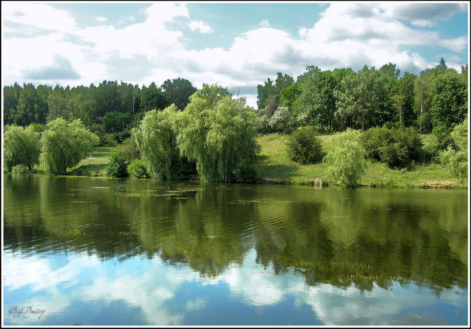
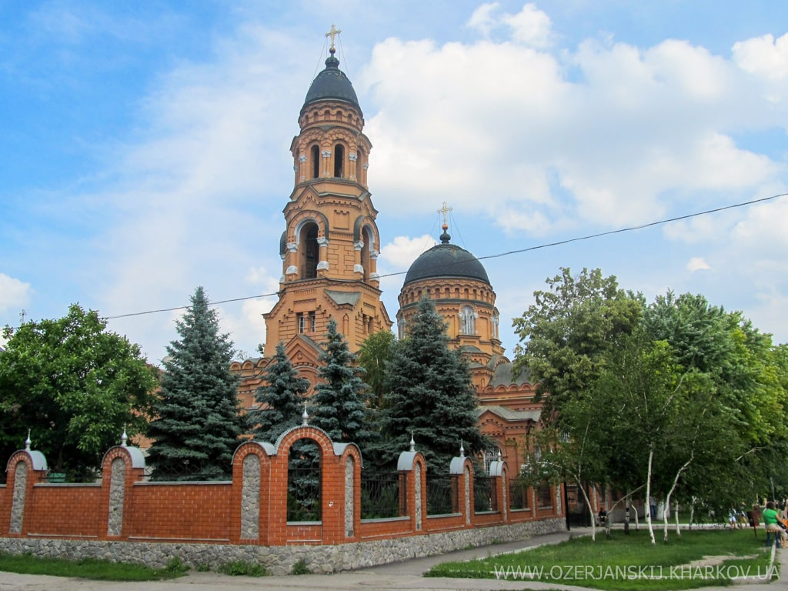
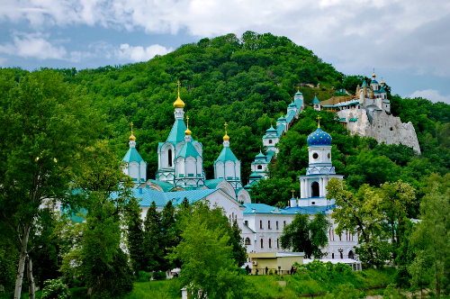

Июль месяц богат православными праздниками


7 июля-
Рождество честного славного Пророка, Предтечи и Крестителя Господня Иоанна
8 июля-
Благоверного князя Петра и Февронии, Муромских чудотворцев
12 июля-
Славных и всехвальных первоверховных апостолов Петра и Павла
13 июля-
Собор славных и всехвальных 12-ти апостолов
17 июля-
Страстотерпцев царя Николая, царицы Александры, царевича Алексия, великих княжен Ольги, Татианы, Марии, Анастасии
18 июля-
Обретение честных мощей преподобного Сергия, игумена Радонежского, всея России чудотворца

24 июля-
Равноапостольной Ольги, великой княгини Российской
28 июля-
Равноапостольного великого князя Владимира